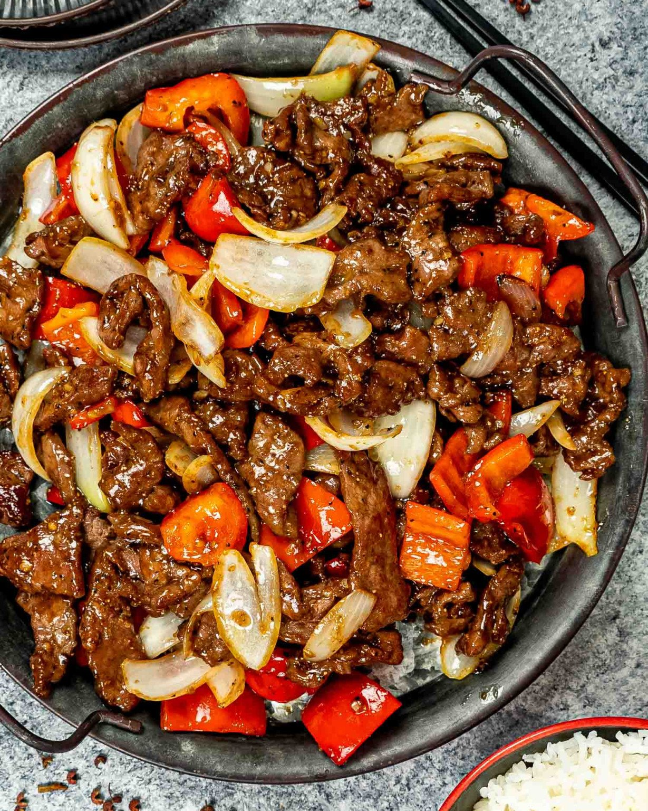

Black Pepper Beef Recipe

Description
This simple Chinese stir-fry is delicious!
Serve with steamed rice.
Ingredients
- 2 tbsp vegetable oil
- 4 gloves garlic, chopped
- 1/2 pound ground beef
- 1/2 small head cabbage, shredded
- 1 red bell pepper, cut into strips
- 2 tbsp soy sauce
- 1/2 cold water
- Salt & Pepper, to taste
Steps
- Gather Ingredients
- Heat a wok or large skillet over medium-high heat, and add oil
- Saute garlic for 5 seconds, then add ground beef
- Stir fry until beef is evenly brown, 7 minutes
- Drain Excess Fat
- Stir Cabbage and Pepper, cook until vegetables are tender and beef is fully cooked
- String in soy sauce
- Mix together cornstarch and water, and stir in
- Season with pepper add sat to taste
- Cook, stirring, until sauce has thickened
- Serve hot and enjoy!
Nutritional Facts per serving
- 280 Calories
- 22g Fat
- 10g Carbs
- 12g Protein
Back to Main Page